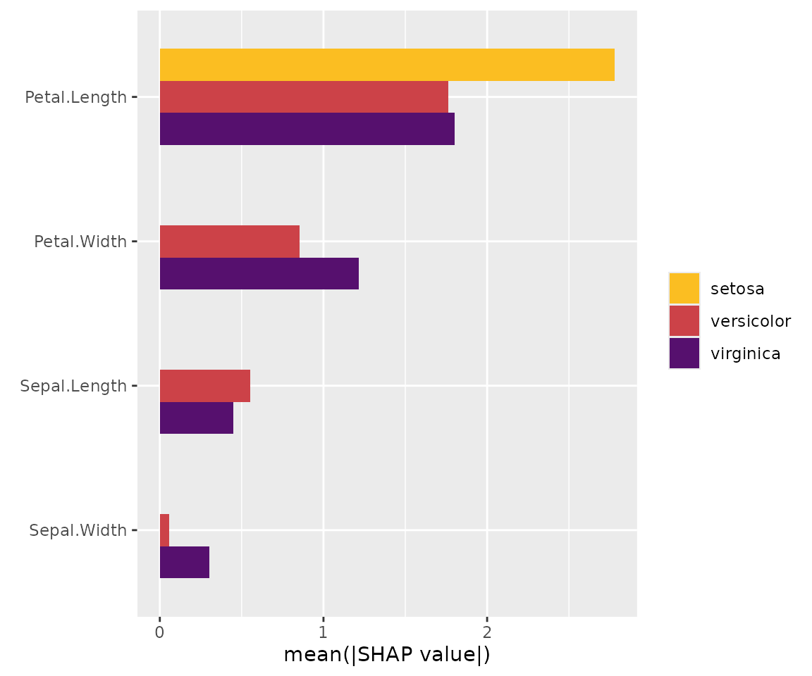
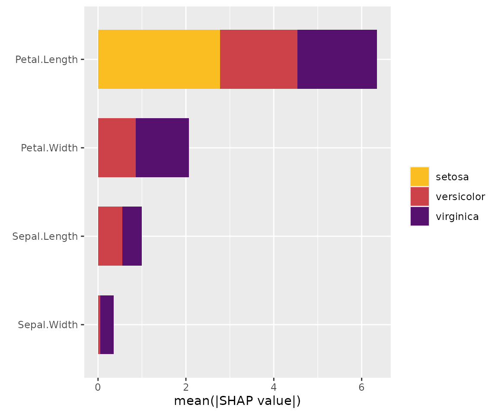
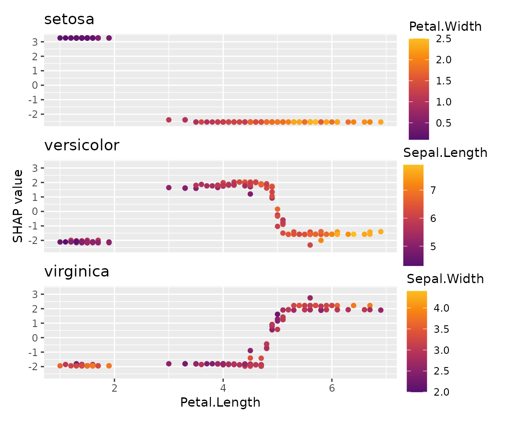
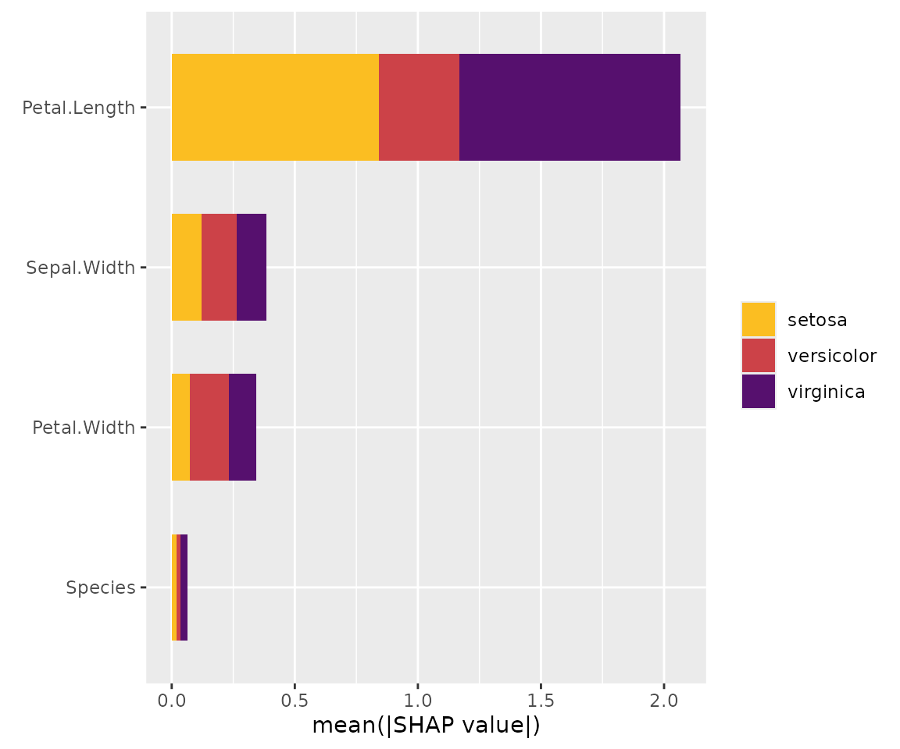
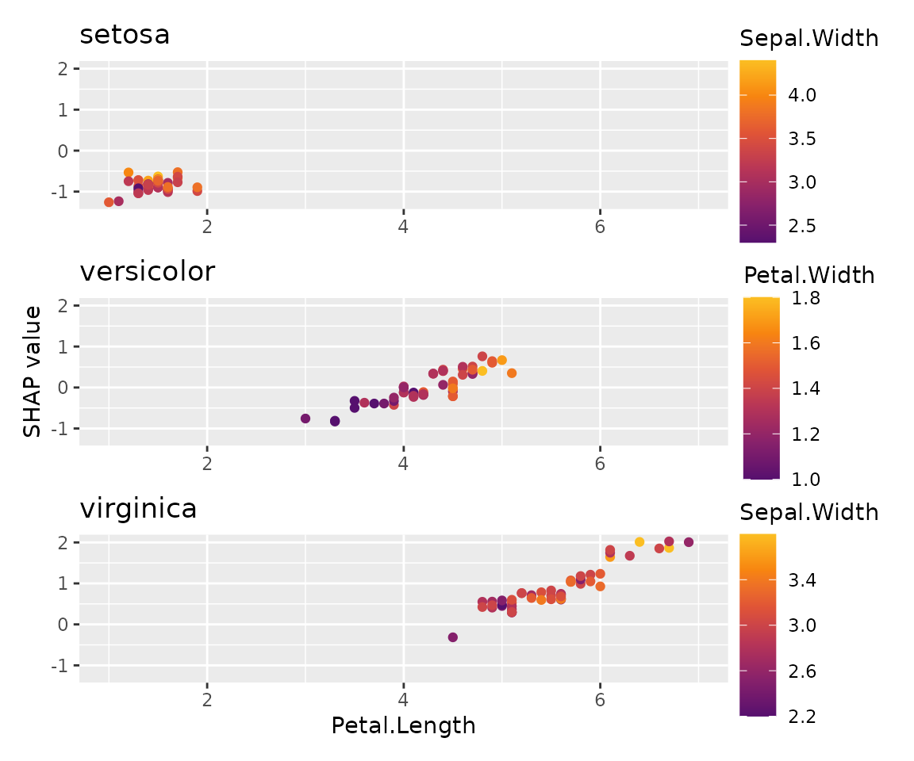

Overview
Sometimes, you will find it necessary to work with several “shapviz” objects at the same time:
- To visualize SHAP values of a multiclass or multi-output model.
- To compare SHAP plots of different models with common features.
- To study SHAP plots between subgroups.
To simplify the workflow, {shapviz} offers a “mshapviz” object (“m” like “multi”). You can create it in different ways:
- Use
shapviz()on multiclass XGBoost or LightGBM models. - Use
shapviz()on “kernelshap” or “permshap” objects created from multiclass/multioutput models via the {kernelshap} package. - Use
c(Mod_1 = s1, Mod_2 = s2, ...)on “shapviz” objectss1,s2, … - Or
mshapviz(list(Mod_1 = s1, Mod_2 = s2, ...))
The sv_*() functions mainly use the {patchwork} package
to glue the individual plots together. An exception is
sv_importance(..., kind = "bar"), which produces a dodged
barplot via {ggplot2}, by default.
Example: Multiclass XGBoost model
library(shapviz)
library(ggplot2)
library(patchwork)
library(xgboost)
params <- list(objective = "multi:softprob", num_class = 3, nthread = 1)
X_pred <- data.matrix(iris[, -5])
dtrain <- xgb.DMatrix(X_pred, label = as.integer(iris[, 5]) - 1, nthread = 1)
fit <- xgb.train(params = params, data = dtrain, nrounds = 50)
# Create "mshapviz" object (logit scale)
(x <- shapviz(fit, X_pred = X_pred, X = iris))
#> 'mshapviz' object representing 3 'shapviz' objects:
#> 'Class_1': 150 x 4 SHAP matrix
#> 'Class_2': 150 x 4 SHAP matrix
#> 'Class_3': 150 x 4 SHAP matrix
# Contains "shapviz" objects for all classes
all.equal(x[[3]], shapviz(fit, X_pred = X_pred, X = iris, which_class = 3))
#> [1] TRUE
# Better names
names(x) <- levels(iris$Species)
x
#> 'mshapviz' object representing 3 'shapviz' objects:
#> 'setosa': 150 x 4 SHAP matrix
#> 'versicolor': 150 x 4 SHAP matrix
#> 'virginica': 150 x 4 SHAP matrix
# SHAP plots
sv_importance(x)
sv_importance(x, bar_type = "stack") # Same but stacked
sv_dependence(x, v = "Petal.Length", share_y = TRUE) +
plot_layout(ncol = 1)
Similar for LightGBM (only code)
library(shapviz)
library(lightgbm)
# Model
params <- list(objective = "multiclass", num_class = 3)
X_pred <- data.matrix(iris[, -5])
dtrain <- lgb.Dataset(X_pred, label = as.integer(iris[, 5]) - 1)
fit <- lgb.train(params = params, data = dtrain, nrounds = 50)
x <- shapviz(fit, X_pred = X_pred, X = iris)
sv_importance(x)Or for a random forest with {kernelshap}
Since Kernel SHAP is model agnostic, we get SHAP values on
probability scale. To explain log-odds, we would need to pass our own
predict function to kernelshap().
library(shapviz)
library(kernelshap)
library(ggplot2)
library(patchwork)
library(ranger)
# Model
fit <- ranger(Species ~ ., data = iris, num.trees = 100, probability = TRUE, seed = 1)
# "mshapviz" object
x <- kernelshap(fit, X = iris[-5], bg_X = iris)
shp <- setNames(shapviz(x), levels(iris$Species))
# all.equal(shp[[3]], shapviz(x, which_class = 3))
sv_importance(shp)
sv_dependence(shp, v = "Sepal.Width", share_y = TRUE) +
plot_layout(ncol = 1)
Example: SHAP subgroup analysis
Let’s compare SHAP dependence plots across Species.
library(shapviz)
library(ggplot2)
library(patchwork)
library(xgboost)
X_pred <- data.matrix(iris[, -1])
dtrain <- xgb.DMatrix(X_pred, label = iris[, 1], nthread = 1)
fit_xgb <- xgb.train(params = list(nthread = 1), data = dtrain, nrounds = 50)
# Create "mshapviz" object and split it into subgroups
shap_xgb <- shapviz(fit_xgb, X_pred = X_pred, X = iris)
x_subgroups <- split(shap_xgb, f = iris$Species)
# SHAP analysis
sv_importance(x_subgroups, bar_type = "stack")
sv_dependence(x_subgroups, v = "Petal.Length", share_y = TRUE) +
plot_layout(ncol = 1) &
xlim(1, 7)
Example: Different models
In the last example, we used a regression model fitted via XGBoost. How does it compare with a linear regression?
Fit linear regression and use {kernelshap} to get SHAP values
library(kernelshap)
fit_lm <- lm(Sepal.Length ~ ., data = iris)
shap_lm <- shapviz(kernelshap(fit_lm, iris[-1], bg_X = iris))
# Combine "shapviz" objects
mshap <- c(lm = shap_lm, xgb = shap_xgb)
mshap
#> 'mshapviz' object representing 2 'shapviz' objects:
#> 'lm': 150 x 4 SHAP matrix
#> 'xgb': 150 x 4 SHAP matrix
# SHAP analysis
sv_importance(mshap)
sv_dependence(mshap, v = "Species", share_y = TRUE)